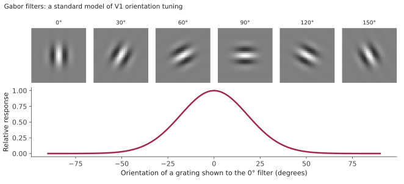
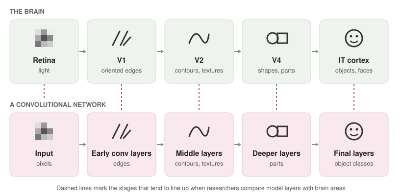
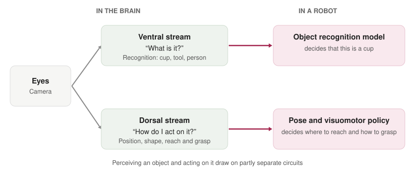
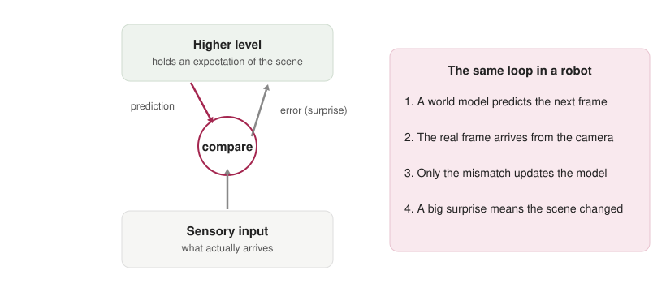

How the brain sees, and what a robot can borrow from it
A camera records a grid of numbers. A brain does something else: within a fraction of a second it turns light into objects, distances and intentions, and it does so while the eyes are moving. Engineers have borrowed from this process for decades, sometimes loosely and sometimes with care. This post follows the signal from the eye to the cortex, then asks at each stage what a robot can actually take from it, with the studies behind each idea and an honest account of where the borrowing has not worked.
1. From the eye to the cortex
Light is focused onto the retina, where photoreceptors convert it into electrical signals. Already here the brain is doing more than recording. In the early 1950s, Stephen Kuffler showed that retinal ganglion cells respond to contrast in a small patch of the visual field: a cell may fire when a spot of light lands in the centre of its patch and be suppressed when light falls on the surrounding ring. Cells like this report where brightness changes, not how bright things are, which is why a printed page looks the same in dim and bright light.

The signal travels through the thalamus (the lateral geniculate nucleus) to the primary visual cortex, V1, at the back of the head. Two features of this map matter for engineering. First, it is retinotopic: neighbouring points in the visual field activate neighbouring patches of cortex, so the picture is spatially organised from the start. Second, it is uneven. Only a small central region of the retina, the fovea, sees in fine detail, and it is given a disproportionately large share of cortex. The brain does not spend its resources evenly across the image, a point that returns in Section 7.
2. V1 as an edge detector
In the late 1950s, David Hubel and Torsten Wiesel recorded from single neurons in the cat’s visual cortex and found that many respond best to a bar or edge at a particular orientation, and hardly at all to other orientations. They described simple cells, which respond to an edge at one position, and complex cells, which respond to an edge of the right orientation anywhere in a small region. Together these two cell types already contain two of the main ideas of modern vision networks: detect local features, then tolerate small shifts in where they appear.
A standard mathematical model of a simple cell is the Gabor filter, a sinusoidal stripe pattern under a Gaussian window, proposed for the visual cortex by John Daugman in 1985 and tested against recordings from cat cortex by Judson Jones and Larry Palmer in 1987. The figure below builds a bank of Gabor filters at six orientations and measures how the 0° filter responds to gratings of different orientations. In my version, the response falls to half of its peak at about 22° away from the filter’s preferred orientation, which is the kind of sharpness the recordings describe.

The first layer of many trained convolutional networks learns filters that look much like these, which is one of the more striking coincidences between artificial and biological vision.
3. A hierarchy of features
Beyond V1 the signal passes through V2 and V4 to the inferotemporal (IT) cortex. Along the way, the neurons’ receptive fields grow larger and the features they prefer become more complex: oriented edges, then contours and textures, then shapes and parts, then whole objects and faces. The visual cortex builds features in layers.
Several models turned this into algorithms. Kunihiko Fukushima’s Neocognitron (1980) alternated feature-detecting and shift-tolerant layers, directly inspired by simple and complex cells. Yann LeCun’s convolutional networks made the idea trainable, and Maximilian Riesenhuber and Tomaso Poggio’s HMAX model (1999) gave a compact, brain-motivated account of how such a hierarchy could recognise objects in a way that tolerates changes in position and size.

4. How close is the match, really?
The resemblance can be tested instead of just drawn. In 2014, Daniel Yamins, James DiCarlo and colleagues showed that networks optimised for object recognition predicted neural responses in monkey IT cortex better than earlier models, and that deeper layers matched higher brain areas. In the same year, Seyed-Mahdi Khaligh-Razavi and Nikolaus Kriegeskorte, and Charles Cadieu and colleagues, reported similar agreement using different measures. This work led to benchmarks such as Brain-Score (Martin Schrimpf and colleagues), which ranks models by how well they predict neural and behavioural data, and it motivated brain-structured models such as the recurrent CORnet-S of Jonas Kubilius and colleagues.
The resemblance has also paid off in robustness. Joel Dapello and colleagues placed a fixed, V1-like front end at the start of a standard network and found that it improved resistance to adversarial perturbations and common image corruptions. But a high brain score does not guarantee human-like behaviour. Robert Geirhos and colleagues showed that networks trained on ImageNet lean on texture, where people lean on shape, so a network can match the brain’s responses on one measure and still err in ways a person would not.
That gap is the question behind a project I proposed on brain-aligned vision models: do models that predict visual-cortex responses better also keep recognising objects the way people do when images are blurred, occluded or low in contrast? The design compares feedforward and recurrent models, and separates overall robustness from similarity to biological vision by measuring accuracy, confidence calibration and image-level error patterns across degradation strengths.
5. Seeing for knowing and seeing for doing
From V1, visual information splits into two routes. Leslie Ungerleider and Mortimer Mishkin described them in 1982: a ventral route toward the temporal lobe, concerned with what an object is, and a dorsal route toward the parietal lobe, concerned with where it is. Melvyn Goodale and David Milner later reframed the split as perception versus action. Their best-known evidence is a patient, D.F., who could not report the orientation of a slot but could still post a card through it correctly: her hand knew what her conscious perception did not.

Robotics has a close counterpart. Recognising a cup and grasping it are different computations, and many robot systems separate them, with one model naming things and another estimating the pose and shape needed to reach. The older tradition of visual servoing, surveyed by François Chaumette and Seth Hutchinson, uses image measurements directly to drive a robot arm toward a target, which is the dorsal idea in engineering form. More recent work trains the whole mapping from pixels to motor commands at once: Sergey Levine and colleagues’ end-to-end visuomotor policies (2016) and their large-scale grasping experiments (2018) learned hand–eye coordination directly. The two designs differ in an interesting way: the brain’s split is a division of labour, while an end-to-end network has to rediscover whichever division helps.

6. Perception as prediction
One influential account says the brain does not passively receive images. In the 1999 predictive coding model of Rajesh Rao and Dana Ballard, higher areas send predictions down the hierarchy, lower areas send back only the prediction error, and the system learns by shrinking that error. Several oddities of visual cortex responses fall out of this idea, and it explains why a surprising event is processed more strongly than an expected one.
Robotics reached a similar idea through world models. David Ha and Jürgen Schmidhuber trained an agent to learn a compact model of its environment and then practise inside that model, and Danijar Hafner and colleagues’ Dreamer learns behaviours by imagining future states in a learned latent space. In both, the useful signal is the gap between what the model expected and what the camera showed.

7. Looking is an action
The eye is not a camera. Because only the fovea sees in fine detail, people make about three rapid eye movements, called saccades, every second to sample the scene. What we experience as one sharp picture is assembled from many small glimpses, guided by what is likely to be informative. Laurent Itti, Christof Koch and Ernst Niebur’s 1998 saliency model formalised one part of this: it combines colour, intensity and orientation maps to predict where attention goes.
Ruzena Bajcsy argued in 1988 that machine perception should also be active, choosing where to look as part of the task. Volodymyr Mnih and colleagues’ recurrent attention model (2014) did this with a network that looks at an image through a small moving window and learns where to look next, spending computation only where it is needed. For a robot with limited processing power, this is a practical idea: look carefully at a small region instead of processing every pixel equally.
8. Hardware that works like a retina
The retina has inspired sensors too. Misha Mahowald and Carver Mead built a silicon retina in the late 1980s, and its descendants are event cameras, whose pixels report only changes in brightness, asynchronously and with very fine timing. Guillermo Gallego and colleagues survey the field. Because they send data only where something changes, event cameras produce less data and lower latency than ordinary cameras, which suits fast robots. Neuromorphic chips such as Intel’s Loihi, described by Mike Davies and colleagues, are designed to process such sparse signals efficiently.
9. Borrowing brain-like representations for robot learning
A more recent line of work pretrains visual representations on large amounts of human video and reuses them for robot control. R3M, from Suraj Nair and colleagues, learned from egocentric video of people and improved data efficiency in manipulation. Arjun Majumdar and colleagues built VC-1, aimed at an artificial visual cortex for embodied tasks, and evaluated it across a large benchmark suite. One of their findings was that no single pretrained representation was best everywhere, which is a useful reminder that the brain’s generality is still ahead of ours.
10. At what level should a robot borrow?
David Marr’s 1982 book Vision separated three levels of explanation: the computational level (what problem is being solved and why), the algorithmic level (what representation and procedure solve it), and the implementation level (how neurons or hardware carry it out). The history above can be read as borrowing at each level. Predictive coding and the two-streams split are ideas at the computational level. Gabor filters, hierarchies and attention are algorithms. Event cameras and neuromorphic chips borrow at the implementation level. The most successful borrowing so far has mostly been at the algorithmic level, where it can be tested on a benchmark, and the least tested is the computational level, such as whether a robot benefits from splitting recognition from action when it can learn the split by itself.
What is still hard
Feedback and recurrence. The brain has many connections running backward through the hierarchy. Most deployed robot vision stacks are mainly feedforward.
Robustness. People handle blur, clutter and odd viewpoints with little effort. Models often need targeted training to do the same.
Learning from little experience. Infants learn to see and act from a modest amount of data, and robots still use far more.
Closing the loop. Most of the studies above measure recognition. A robot also has to move, and its movement changes what it sees next.
Knowing what to measure. A brain score is one yardstick. A robot needs ones that predict success at the task.
Further reading
Kuffler, S. W. (1953). Discharge patterns and functional organization of mammalian retina. Journal of Neurophysiology.
Hubel, D. H. and Wiesel, T. N. (1959, 1962). Receptive fields of neurones in the cat’s visual cortex. Journal of Physiology.
Daugman, J. G. (1985). Uncertainty relation for resolution in space, spatial frequency, and orientation optimized by two-dimensional visual cortical filters. JOSA A.
Jones, J. P. and Palmer, L. A. (1987). An evaluation of the two-dimensional Gabor filter model of simple receptive fields in cat striate cortex. Journal of Neurophysiology.
Fukushima, K. (1980). Neocognitron. Biological Cybernetics.
LeCun, Y., Bottou, L., Bengio, Y. and Haffner, P. (1998). Gradient-based learning applied to document recognition. Proceedings of the IEEE.
Riesenhuber, M. and Poggio, T. (1999). Hierarchical models of object recognition in cortex. Nature Neuroscience.
Yamins, D. L. K. et al. (2014). Performance-optimized hierarchical models predict neural responses in higher visual cortex. PNAS.
Khaligh-Razavi, S.-M. and Kriegeskorte, N. (2014). Deep supervised, but not unsupervised, models may explain IT cortical representation. PLoS Computational Biology.
Cadieu, C. F. et al. (2014). Deep neural networks rival the representation of primate IT cortex for core visual object recognition. PLoS Computational Biology.
Schrimpf, M. et al. (2020). Integrative benchmarking to advance neurally mechanistic models of human intelligence. Neuron. (Brain-Score)
Kubilius, J. et al. (2019). Brain-like object recognition with high-performing shallow recurrent ANNs. NeurIPS. (CORnet-S)
Dapello, J. et al. (2020). Simulating a primary visual cortex at the front of CNNs improves robustness to image perturbations. NeurIPS.
Geirhos, R. et al. (2019). ImageNet-trained CNNs are biased towards texture. ICLR.
Ungerleider, L. G. and Mishkin, M. (1982). Two cortical visual systems. In Analysis of Visual Behavior.
Goodale, M. A. and Milner, A. D. (1992). Separate visual pathways for perception and action. Trends in Neurosciences.
Chaumette, F. and Hutchinson, S. (2006, 2007). Visual servo control, Parts I and II. IEEE Robotics & Automation Magazine.
Levine, S., Finn, C., Darrell, T. and Abbeel, P. (2016). End-to-end training of deep visuomotor policies. JMLR.
Levine, S. et al. (2018). Learning hand-eye coordination for robotic grasping with deep learning and large-scale data collection. IJRR.
Rao, R. P. N. and Ballard, D. H. (1999). Predictive coding in the visual cortex. Nature Neuroscience.
Ha, D. and Schmidhuber, J. (2018). World Models. arXiv.
Hafner, D. et al. (2020). Dream to Control: Learning Behaviors by Latent Imagination. ICLR.
Itti, L., Koch, C. and Niebur, E. (1998). A model of saliency-based visual attention for rapid scene analysis. IEEE TPAMI.
Bajcsy, R. (1988). Active perception. Proceedings of the IEEE.
Mnih, V., Heess, N., Graves, A. and Kavukcuoglu, K. (2014). Recurrent models of visual attention. NeurIPS.
Gallego, G. et al. (2022). Event-based vision: a survey. IEEE TPAMI.
Davies, M. et al. (2018). Loihi: a neuromorphic manycore processor with on-chip learning. IEEE Micro.
Nair, S. et al. (2022). R3M: a universal visual representation for robot manipulation. CoRL.
Majumdar, A. et al. (2023). Where are we in the search for an artificial visual cortex for embodied intelligence? NeurIPS.
Marr, D. (1982). Vision. W. H. Freeman.
Appendix: image credits
Figures 2, 3, 5 and 6: my own diagrams. Figure 2 is computed from a standard Gabor filter model, and the others are schematics drawn to illustrate the ideas above. None are data from the cited studies.
Figure 1: “Schematic diagram of the human eye” by Rhcastilhos, public domain, via Wikimedia Commons.

Figure 4: “Ventral-dorsal streams” by Selket (derived from an illustration in Henry Gray’s Anatomy of the Human Body), licensed CC BY-SA 3.0, via Wikimedia Commons. Shown unmodified.